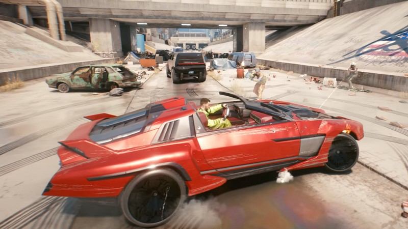
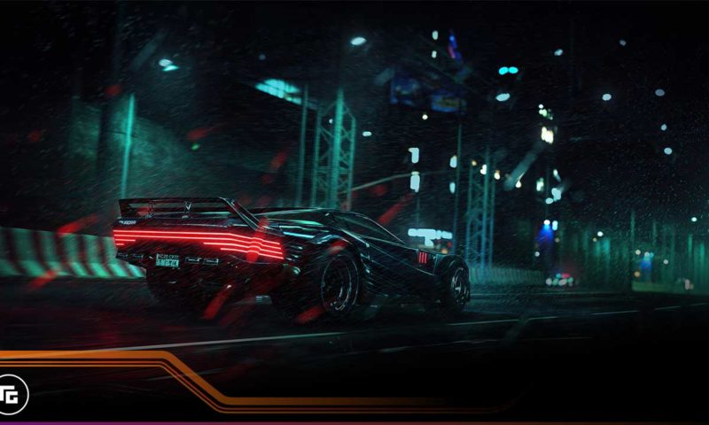
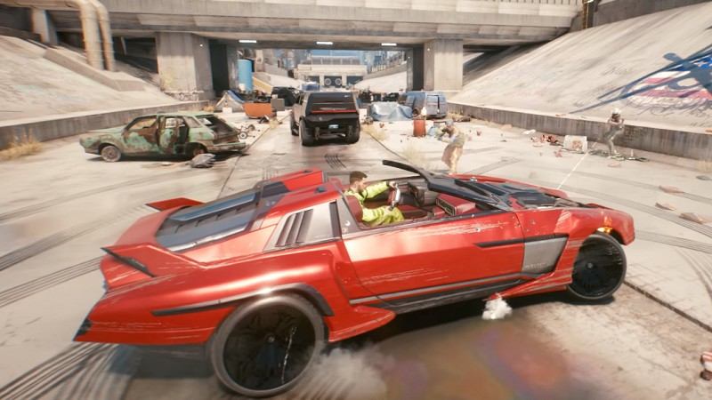
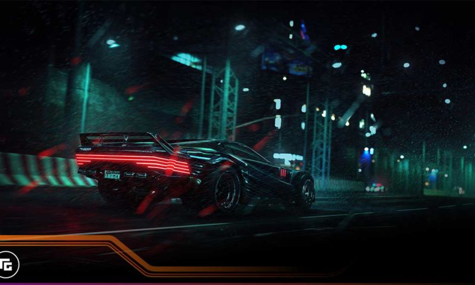

Discover
Our Story
Cyberpunk 2077 is a continuation of the events of Cyberpunk 2020, taking an alternate path to that of Cyberpunk V3.0. The game is set in the dystopian metropolis of Night City. It is set in the Free State of Northern California. Night City is located south of San Francisco around the area of Morro Bay, CA. During Cyberpunk 2020, Night City is said to have a population of more than five million inhabitants. However, this number is suspected to be considerably larger in 2077. Following an economic collapse sometime during the early 21st century, the United States is forced to rely on large corporations to survive. These corporations deal in a wide range of areas, such as weapons, robotics, cybernetics, pharmaceuticals, communications, and biotechnology; many of these companies operate above the law. The game follows the story of V — a hired gun on the rise in Night City, the most violent and dangerous metropolis of the corporate-ruled future. A robust character creator will allow players to choose V's gender, visual appearance, as well as historical background — all of which may influence the shape of the game.
About Us
 


